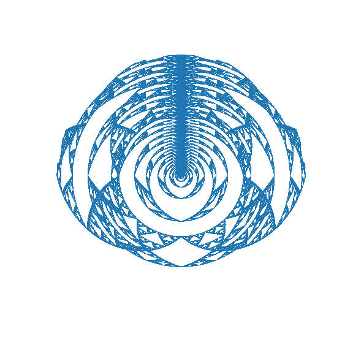
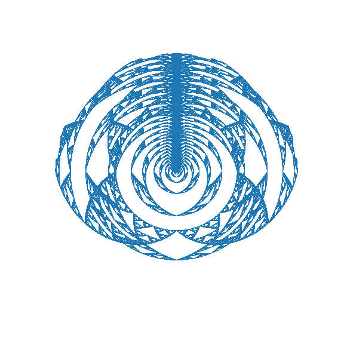

Method
One nice aspect of circles or discs is the ease with which they can be folded. Imagine a disc with a certain topology on its surface made of translucent dough. This dough can be pulled outward radially, stretching it into a wider circle. Then, the surface in excess of the original disc's shape can be pulled up and then back over the disc until the disc matches its original width. This can be visualized in the below diagram.
Mathematically, this is really simple to do. One simply maps the disc to polar coordinates centered on the original disc's center, enlarges the disc and its topological elements radial coordinates, reduces the radial coordinates where they exceed the original disc's radius, and finally map it back to cartesian coordinates. Note that the enlargement and reduction steps can be done by applying some periodic function with the same domain as the circle's original radius. For example \[r'=\frac{R}{2}\left(\sin\left(\pi\cdot a\frac{r}{R}\right)+1\right)\] or \[r'=\frac{R}{2}\left(\text{trianglewave}\left(\pi\cdot a\frac{r}{R}\right)+1\right)\] suffice as transformations of the radial coordinate where \(a\) represents the amount of stretching and folding being done and \(R\) represents the radius of the original disc. Both of these are periodic functions with a domain of \([0, R]\) so, once \(a\) becomes sufficiently large, the topology will be folded multiple times.
This can be done for other shapes like triangles but is trickier. While a hypothetical triangular analog to polar coordinates (imagine a point has coordinates where one represents the radius of a similar triangle that it falls on and the other represents angle), these would only map to Cartesian coordinates via piecewise functions.
Application
These folding methods can be applied to circles with interesting topology to produce more interesting topology. For example, consider the method used to fold triangles into circles. The left or top gif below shows that applying this method even to relatively simple topology like the one produced by folding a cartesian grid on a triangle into a circle will produce interesting flower like patterns — with petals growing in complexity as more folds happen. If such a simple topology looks so cool, it makes sense that more complicated topologies which follow it like the Sierpinski circle will be even cooler (as shown in the right or bottom gif below).
 

In the above gifs, the original symmetries (reflection over the vertical axis) are naturally preserved since transformations that only alter radius will not impact radius. Also note that because the Sierpinski circle converts the Sierpinski triangle's self-similarity on top-vertex zoom into self-similarity on center zoom, the method applied here (which expands circles from the center) enlarges its recursively tiny copies. As this method folds these copies over and over each other, the complexity of the topology produced is only limited by the number of foldings and the resolution of the fractal.
This observation is true of any circular fractal that has self-similarity around its center. Below is the same folding methodology applied to an Appollonian window. The symmmetry across the vertical axis and the structure of the central triangles are preserved.